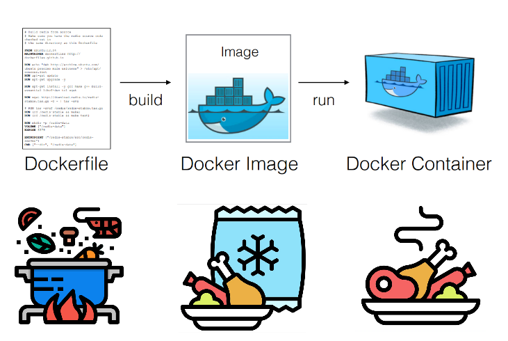

<!DOCTYPE html>
<html lang="en">
  <head>
    <meta charset="utf-8" />
    <meta name="viewport" content="width=device-width, initial-scale=1.0, maximum-scale=1.0, user-scalable=no" />

    <title></title>
    <link rel="stylesheet" href="dist/reveal.css" />
    <link rel="stylesheet" href="dist/theme/moon.css" id="theme" />
    <link rel="stylesheet" href="plugin/highlight/monokai.css" />
	<link rel="stylesheet" href="css/layout.css" />
	<link rel="stylesheet" href="plugin/customcontrols/style.css">


    <script defer src="dist/fontawesome/all.min.js"></script>

	<script type="text/javascript">
		var forgetPop = true;
		function onPopState(event) {
			if(forgetPop){
				forgetPop = false;
			} else {
				parent.postMessage(event.target.location.href, "app://obsidian.md");
			}
        }
		window.onpopstate = onPopState;
		window.onmessage = event => {
			if(event.data == "reload"){
				window.document.location.reload();
			}
			forgetPop = true;
		}

		function fitElements(){
			const itemsToFit = document.getElementsByClassName('fitText');
			for (const item in itemsToFit) {
				if (Object.hasOwnProperty.call(itemsToFit, item)) {
					var element = itemsToFit[item];
					fitElement(element,1, 1000);
					element.classList.remove('fitText');
				}
			}
		}

		function fitElement(element, start, end){

			let size = (end + start) / 2;
			element.style.fontSize = `${size}px`;

			if(Math.abs(start - end) < 1){
				while(element.scrollHeight > element.offsetHeight){
					size--;
					element.style.fontSize = `${size}px`;
				}
				return;
			}

			if(element.scrollHeight > element.offsetHeight){
				fitElement(element, start, size);
			} else {
				fitElement(element, size, end);
			}		
		}


		document.onreadystatechange = () => {
			fitElements();
			if (document.readyState === 'complete') {
				if (window.location.href.indexOf("?export") != -1){
					parent.postMessage(event.target.location.href, "app://obsidian.md");
				}
				if (window.location.href.indexOf("print-pdf") != -1){
					let stateCheck = setInterval(() => {
						clearInterval(stateCheck);
						window.print();
					}, 250);
				}
			}
	};


        </script>
  </head>
  <body>
    <div class="reveal">
      <div class="slides"><section  data-markdown><script type="text/template"><!-- .slide: class="drop" -->
<div class="" style="position: absolute; left: 0px; top: 0px; height: 600px; width: 800px; min-height: 600px; display: flex; flex-direction: column; align-items: center; justify-content: center" absolute="true">

## Docker Container
### Reproducibilidad de procesos de aprendizaje e investigación de software

Ing (Esp) Alejandro D. Pistilli
</div>

<aside class="notes"><p>Docker presentarme, aclarar que pueden interrumpirme y preguntar.</p>
</aside></script></section><section  data-markdown><script type="text/template"><!-- .slide: class="drop" -->
<div class="" style="position: absolute; left: 0px; top: 0px; height: 600px; width: 800px; min-height: 600px; display: flex; flex-direction: column; align-items: center; justify-content: center" absolute="true">


<aside class="notes"><p>El software informático es parte de la mayoría (sino de todas) las investigaciones científicas de la actualidad y es parte esencial de cualquier recorrido educativo de grado y posgrado, ya sea como medio o como objeto de estudio.<br>    Aunque la reproducibilidad computacional parece más sencilla que replicar experimentos físicos, 
    - Obsolescencia, no funcione o que no aproveche.
    - Constante actualización. 
    -¿Quien no tuvo problemas con ejecutar in programa? ¿Linux Windows? ¿Me podrían dar ejemplos de casos que no funcionó? ¿Correciones de trabajos prácticos/finales? //</p>
</div></aside></script></section><section  data-markdown><script type="text/template"><!-- .slide: class="drop" -->
<div class="" style="position: absolute; left: 0px; top: 0px; height: 600px; width: 800px; min-height: 600px; display: flex; flex-direction: column; align-items: center; justify-content: center" absolute="true">

```
¯\_(ツ)_/¯ It works in my machine
```
</div>

<aside class="notes"><p>¿Cómo hacemos para compartirnos software y asegurarnos que no va a haber imprevistos?</p>
</aside></script></section><section  data-markdown><script type="text/template"><!-- .slide: class="drop" -->
<div class="" style="position: absolute; left: 0px; top: 0px; height: 600px; width: 800px; min-height: 600px; display: flex; flex-direction: column; align-items: center; justify-content: center" absolute="true">

## Método científico
- Observación
- Hipótesis
- Diseño de Experimentos
- Experimento: Recolección y Análisis de datos
- Interpretación de resultados
</div></script></section><section  data-markdown><script type="text/template"><!-- .slide: class="drop" -->
<div class="" style="position: absolute; left: 0px; top: 0px; height: 600px; width: 800px; min-height: 600px; display: flex; flex-direction: column; align-items: center; justify-content: center" absolute="true">

<div class="callout callout-color-default">
<div class="callout-title">
<div class="callout-icon">

<i class="fas fa-pencil-alt" ></i>


</div>
<div class="callout-title-inner">

Reproducibilidad

</div>
</div>
<div class="callout-content">

Capacidad de reproducir en un entorno diferente, el mismo experimento con la misma configuración para recrear resultados.

</div>
</div>

-> Recolección y Análisis de datos <-
</div>

<aside class="notes"><p><a href="https://www.software.ac.uk/blog/2017-02-20-software-reproducibility-possible-and-practical">https://www.software.ac.uk/blog/2017-02-20-software-reproducibility-possible-and-practical</a></p>
</aside></script></section><section  data-markdown><script type="text/template"><!-- .slide: class="drop" -->
<div class="" style="position: absolute; left: 0px; top: 0px; height: 600px; width: 800px; min-height: 600px; display: flex; flex-direction: column; align-items: center; justify-content: center" absolute="true">

### ¿Qué necesitamos para la reproducibilidad de software?

- Establecer pasos y métodos claros.
- Definir el entorno de ejecución y toda sus dependencias.
- Disponer del código o de la aplicación(es).
- Acceso datos para su procesamiento y análisis.
- Sea de fácilmente replicable.
</div>

<aside class="notes"><p>Entorno de ejecución: describe las condiciones bajo las cuales los programas de computadora</p>
</aside></script></section><section  data-markdown><script type="text/template"><!-- .slide: class="drop" -->
<div class="" style="position: absolute; left: 0px; top: 0px; height: 600px; width: 800px; min-height: 600px; display: flex; flex-direction: column; align-items: center; justify-content: center" absolute="true">

Measuring Reproducibility in Computer Systems Research (2014)


</div></script></section><section  data-markdown><script type="text/template"><!-- .slide: class="drop" -->
<div class="" style="position: absolute; left: 0px; top: 0px; height: 600px; width: 800px; min-height: 600px; display: flex; flex-direction: column; align-items: center; justify-content: center" absolute="true">

## Contenedores

Representan el código empaquetado junto con todo lo que necesitan para ejecutarse, incluidos archivos de aplicaciones, entornos de ejecución, bibliotecas dependientes y configuraciones.

<aside class="notes"><p>dependencias?</p>
</div></aside></script></section><section  data-markdown><script type="text/template"><!-- .slide: class="drop" -->
<div class="" style="position: absolute; left: 0px; top: 0px; height: 600px; width: 800px; min-height: 600px; display: flex; flex-direction: column; align-items: center; justify-content: center" absolute="true">

## Docker

Entorno para construir, ejecutar y administrar contenedores


</div></script></section><section  data-markdown><script type="text/template"><!-- .slide: class="drop" -->
<div class="" style="position: absolute; left: 0px; top: 0px; height: 600px; width: 800px; min-height: 600px; display: flex; flex-direction: column; align-items: center; justify-content: center" absolute="true">

**Dockerfile** documento con las instrucciones necesarias para crear una **Imagen Docker**.

```dockerfile
FROM python:3.9.14-slim-buster

RUN apt-get update 

RUN apt-get install -y --no-install-recommends python3-opencv

WORKDIR /home/app

COPY requirements.txt requirements.txt

RUN pip install --no-cache-dir -r requirements.txt

COPY . .

CMD ["python","/home/app/app.py"]
```
</div></script></section><section  data-markdown><script type="text/template"><!-- .slide: class="drop" -->
<div class="" style="position: absolute; left: 0px; top: 0px; height: 600px; width: 800px; min-height: 600px; display: flex; flex-direction: column; align-items: center; justify-content: center" absolute="true">

La **Imagen Docker** es estática, inmutable. Puede versionarse.

El **Contenedor Docker** es la ejecución *efímera* de una **Imagen Docker** junto con:
- Sistema de archivos
- Variables de entorno
- Uno o más puertos enlazados
</div></script></section><section  data-markdown><script type="text/template"><!-- .slide: class="drop" -->
<div class="" style="position: absolute; left: 0px; top: 0px; height: 600px; width: 800px; min-height: 600px; display: flex; flex-direction: column; align-items: center; justify-content: center" absolute="true">


</div>

<aside class="notes"><p>Drawing 2022-10-23 17.17.46.excalidraw</p>
</aside></script></section><section  data-markdown><script type="text/template"><!-- .slide: class="drop" -->
<div class="" style="position: absolute; left: 0px; top: 0px; height: 600px; width: 800px; min-height: 600px; display: flex; flex-direction: column; align-items: center; justify-content: center" absolute="true">


</div></script></section><section  data-markdown><script type="text/template"><!-- .slide: class="drop" -->
<div class="" style="position: absolute; left: 0px; top: 0px; height: 600px; width: 800px; min-height: 600px; display: flex; flex-direction: column; align-items: center; justify-content: center" absolute="true">

##  Docker Container
Permite crear, probar e implementar aplicaciones a través del uso de **contenedores**. 

## DockerHub o Registry
Servicio que provee Docker para buscar y compartir imágenes de **contenedores**.
</div></script></section><section  data-markdown><script type="text/template"><!-- .slide: class="drop" -->
<div class="" style="position: absolute; left: 0px; top: 0px; height: 600px; width: 800px; min-height: 600px; display: flex; flex-direction: column; align-items: center; justify-content: center" absolute="true">

### Comandos

```bash
docker build -t <nombre_de_la_imagen> Dockerfile

docker pull <identificador_imagen>:<tag>

docker images

docker run -d --name <nombre_del_contenedor> \
	-p 8085:8080 <nombre_de_la_imagen>
	
docker ps -a

docker exect -it <nombre_del_contenedor>
```
</div></script></section><section  data-markdown><script type="text/template"><!-- .slide: class="drop" -->
<div class="" style="position: absolute; left: 0px; top: 0px; height: 600px; width: 800px; min-height: 600px; display: flex; flex-direction: column; align-items: center; justify-content: center" absolute="true">

### Ventajas

- Rápida y sencilla instalación
- Multiplataforma: Linux, Windows y MacOS
- Procesos transparentes de construcción de las imágenes: **Dockerfile**
- Imágenes livianas: **Linux Alpine**
- Fácil de construir, compartir y publicar: **DockerHub.com**
- Versionado a través de etiquetas
</div></script></section><section  data-markdown><script type="text/template"><!-- .slide: class="drop" -->
<div class="" style="position: absolute; left: 0px; top: 0px; height: 600px; width: 800px; min-height: 600px; display: flex; flex-direction: column; align-items: center; justify-content: center" absolute="true">

## Docker Container y la reproducibilidad del software


</div></script></section><section  data-markdown><script type="text/template"><!-- .slide: class="drop" -->
<div class="" style="position: absolute; left: 0px; top: 0px; height: 600px; width: 800px; min-height: 600px; display: flex; flex-direction: column; align-items: center; justify-content: center" absolute="true">

### Desafíos en la reproducibilidad del software

- &shy;<!-- .element: class="fragment" data-fragment-index="1" -->Descripción de los experimentos, entornos, datos y flujos de trabajo -> **Dockerfile**
- &shy;<!-- .element: class="fragment" data-fragment-index="2" -->Disponibilidad de las dependencias y librerías -> **Docker Images**
</div></script></section><section  data-markdown><script type="text/template"><!-- .slide: class="drop" -->
<div class="" style="position: absolute; left: 0px; top: 0px; height: 600px; width: 800px; min-height: 600px; display: flex; flex-direction: column; align-items: center; justify-content: center" absolute="true">

- &shy;<!-- .element: class="fragment" data-fragment-index="1" -->La complejidad de la naturaleza de los experimentos hacen difícil la réplica  del mismo-> **Docker Container**
- &shy;<!-- .element: class="fragment" data-fragment-index="2" -->Constantes actualizaciones y correcciones del software a lo largo del tiempo -> **Versionado**
- &shy;<!-- .element: class="fragment" data-fragment-index="3" -->Servicio de almacenamiento y distribución -> **DockerHub.com**
</div></script></section><section  data-markdown><script type="text/template"><!-- .slide: class="drop" -->
<div class="" style="position: absolute; left: 0px; top: 0px; height: 600px; width: 800px; min-height: 600px; display: flex; flex-direction: column; align-items: center; justify-content: center" absolute="true">

### Aportes al el proceso de aprendizaje y desarrollo

**Docker Container** permite empaquetar:
- Prototipos (y versionarlos).
- Pruebas conceptuales.
- Análisis computacionales o experimentos.
</div></script></section><section  data-markdown><script type="text/template"><!-- .slide: class="drop" -->
<div class="" style="position: absolute; left: 0px; top: 0px; height: 600px; width: 800px; min-height: 600px; display: flex; flex-direction: column; align-items: center; justify-content: center" absolute="true">

## Caso 1
### Reproducibilidad de aplicaciones en diferentes sistemas operativos
[Trabajo final](https://github.com/lalebot/pip-prom-tom) de la Especialización en Bioinformática.
</div></script></section><section  data-markdown><script type="text/template"><!-- .slide: class="drop" -->
<div class="" style="position: absolute; left: 0px; top: 0px; height: 600px; width: 800px; min-height: 600px; display: flex; flex-direction: column; align-items: center; justify-content: center" absolute="true">

## Caso 2
### Uso de Linux dentro de Windows para estudio e investigación

```bash
docker run -it --entrypoint=bash ubuntu
```
</div>

<aside class="notes"><p>uname -a</p>
</aside></script></section><section  data-markdown><script type="text/template"><!-- .slide: class="drop" -->
<div class="" style="position: absolute; left: 0px; top: 0px; height: 600px; width: 800px; min-height: 600px; display: flex; flex-direction: column; align-items: center; justify-content: center" absolute="true">

### Referencias
- [Using Docker Containers to Improve Reproducibility in Software and Web Engineering Research](https://www.researchgate.net/publication/303515069_Using_Docker_Containers_to_Improve_Reproducibility_in_Software_and_Web_Engineering_Research)
- [Measuring Reproducibility in Computer Systems Research](http://reproducibility.cs.arizona.edu/tr.pdf)
- [An introduction to Docker for reproducible research](https://arxiv.org/pdf/1410.0846.pdf)
- [How to Docker for computer science](https://towardsdatascience.com/how-to-docker-for-your-computer-science-research-project-the-minimal-guide-for-using-docker-2ecd3e9280ac) 
- [Why you should use docker in your research?](https://blog.zooniverse.org/2018/07/17/why-you-should-use-docker-in-your-research/)
</div>

<aside class="notes"><p><a href="https://www.youtube.com/watch?v=GqqX0j127wA">https://www.youtube.com/watch?v=GqqX0j127wA</a> <a href="https://www.udemy.com/course/docker-de-principiante-a-experto/">https://www.udemy.com/course/docker-de-principiante-a-experto/</a> <a href="https://www.youtube.com/watch?v=IyXGesw8ZJY">https://www.youtube.com/watch?v=IyXGesw8ZJY</a> aa_icse16_docker_technical_briefing.pdf</p>
</aside></script></section><section  data-markdown><script type="text/template"><!-- .slide: class="drop" -->
<div class="" style="position: absolute; left: 0px; top: 0px; height: 600px; width: 800px; min-height: 600px; display: flex; flex-direction: column; align-items: center; justify-content: center" absolute="true">

## Webs
- [Repositorio de la presentación](https://github.com/lalebot/seminar-docker-in-research)
- [DockerHub](https://hub.docker.com)
- [Docker books](https://reconshell.com/free-docker-books/) 
- [Play whit Docker](https://labs.play-with-docker.com/ooc)
</div></script></section><section  data-markdown><script type="text/template"><!-- .slide: class="drop" -->
<div class="" style="position: absolute; left: 0px; top: 0px; height: 600px; width: 800px; min-height: 600px; display: flex; flex-direction: column; align-items: center; justify-content: center" absolute="true">

## Repositorio de la presentación


¡Gracias!
</div></script></section></div>
    </div>

    <script src="dist/reveal.js"></script>

    <script src="plugin/markdown/markdown.js"></script>
    <script src="plugin/highlight/highlight.js"></script>
    <script src="plugin/zoom/zoom.js"></script>
    <script src="plugin/notes/notes.js"></script>
    <script src="plugin/math/math.js"></script>
	<script src="plugin/mermaid/mermaid.js"></script>
	<script src="plugin/chart/chart.min.js"></script>
	<script src="plugin/chart/plugin.js"></script>
	<script src="plugin/customcontrols/plugin.js"></script>

    <script>
      function extend() {
        var target = {};
        for (var i = 0; i < arguments.length; i++) {
          var source = arguments[i];
          for (var key in source) {
            if (source.hasOwnProperty(key)) {
              target[key] = source[key];
            }
          }
        }
        return target;
      }

	  function isLight(color) {
		let hex = color.replace('#', '');

		// convert #fff => #ffffff
		if(hex.length == 3){
			hex = `${hex[0]}${hex[0]}${hex[1]}${hex[1]}${hex[2]}${hex[2]}`;
		}

		const c_r = parseInt(hex.substr(0, 2), 16);
		const c_g = parseInt(hex.substr(2, 2), 16);
		const c_b = parseInt(hex.substr(4, 2), 16);
		const brightness = ((c_r * 299) + (c_g * 587) + (c_b * 114)) / 1000;
		return brightness > 155;
	}

	var bgColor = getComputedStyle(document.documentElement).getPropertyValue('--r-background-color').trim();
	var isLight = isLight(bgColor);

	if(isLight){
		document.body.classList.add('has-light-background');
	} else {
		document.body.classList.add('has-dark-background');
	}

      // default options to init reveal.js
      var defaultOptions = {
        controls: true,
        progress: true,
        history: true,
        center: true,
        transition: 'default', // none/fade/slide/convex/concave/zoom
        plugins: [
          RevealMarkdown,
          RevealHighlight,
          RevealZoom,
          RevealNotes,
          RevealMath.MathJax3,
		  RevealMermaid,
		  RevealChart,
		  RevealCustomControls,
        ],


    	allottedTime: 120 * 1000,

		mathjax3: {
			mathjax: 'plugin/math/mathjax/tex-mml-chtml.js',
		},
		markdown: {
		  gfm: true,
		  mangle: true,
		  pedantic: false,
		  smartLists: false,
		  smartypants: false,
		},

		mermaid: {
			theme: isLight ? 'default' : 'dark',
		},

		customcontrols: {
			controls: [
			]
		},
      };

      // options from URL query string
      var queryOptions = Reveal().getQueryHash() || {};

      var options = extend(defaultOptions, {"width":800,"height":600,"margin":0.04,"controls":true,"progress":true,"slideNumber":true,"transition":"concave","transitionSpeed":"normal"}, queryOptions);
    </script>

    <script>
      Reveal.initialize(options);
    </script>
  </body>

  <!-- created with Advanced Slides -->
</html>
